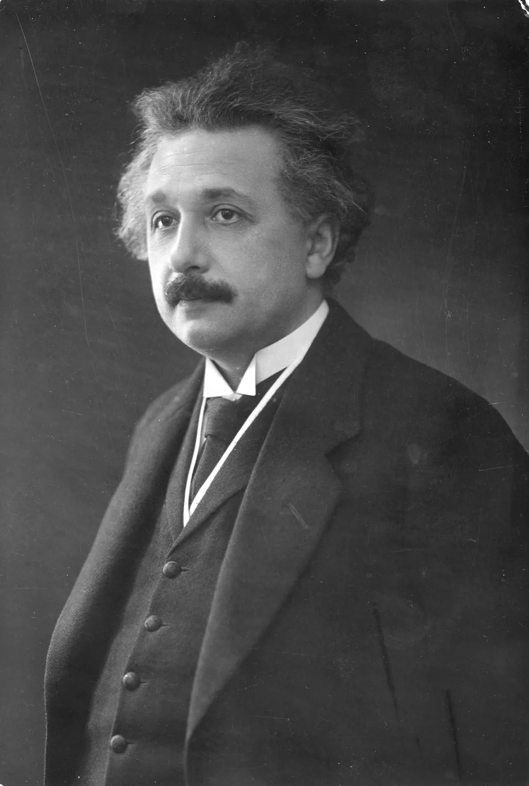

<! DOCTYPE html>
    <html lang="en">

    </html>

    <head>
        <meta charset="UTF-8">
        <meta http-equiv="X-UA-Compatible" content="IE=edge">
        <meta name="viewport" content="width=device-width,
initial-scale=1.0">
        <link rel="stylesheet" href="https://cdnjs.cloudflare.com/ajax/libs/font-awesome/6.4.0/css/all.min.css"
            integrity="sha512-iecdLmaskl7CVkqkXNQ/ZH/XLlvWZOJyj7Yy7tcenmpD1ypASozpmT/E0iPtmFIB46ZmdtAc9eNBvH0H/ZpiBw=="
            crossorigin="anonymous" referrerpolicy="no-referrer" />
        <title>Benim Kişisel Websitem</title>
        <link rel="stylesheet" href="styles/style.css" />
    </head>

    <body>

        <header class="header">
            <a href="#" class="logo">
                

            </a>
            <nav class="navbar">
                <a href="#home" class="active">Anasayfa</a>
                <a href="#gundem">Bilim Gündemi</a>
                <a href="#products">Projelerim</a>
                <a href="#about">Hakkimda</a>
                <a href="#review">Makaleler</a>
                <a href="#contact">Bize Ulasin</a>

            </nav>

            <div class="buttons">
                <button id="search-btn">
                    <i class="fas fa-search"></i>
                </button>
                <button id="cart-btn">
                    <i class="fa-solid fa-bell"></i>
                </button>
                <button id="gundem-btn">
                    <i class="fas fa-bars"></i>
                </button>
            </div>
            <div class="search-form">
                <input type="text" class="search-input" id="search-box" placeholder="Burada ara">
                <i class="fas fa-search"></i>
            </div>

            <div class="cart-items-container">
                <div class="cart-item">
                    <i class="fas fa-times"></i>
                    
                    <div class="content">
                        <h3>Kaydedilen yazilar 01</h3>
                        <div class="price">TUSAŞ Milli Muharip Uçak</div>
                    </div>
                </div> <div class="cart-item">
                    <i class="fas fa-times"></i>
                    
                    <div class="content">
                        <h3>Kaydedilen yazilar 02</h3>
                        <div class="price">TOGG</div>
                    </div>
                </div> <div class="cart-item">
                    <i class="fas fa-times"></i>
                    
                    <div class="content">
                        <h3>Kaydedilen yazilar 03</h3>
                        <div class="price">320 Milyar Metreküp Doğal Gaz!</div>
                    </div>
                </div> <div class="cart-item">
                    <i class="fas fa-times"></i>
                    
                    <div class="content">
                        <h3>Kaydedilen yazilar 04</h3>
                        <div class="price">Türksat 5A Uzayda!</div>
                    </div>
                </div>
                <a href="#" class="btn">Kaydedilenleri Görüntüle</a>
            </div>


        </header>
        <!--! Home section baslangic   -->
        <section class="home" id="home">
            <div class="content">
                <h3>ALPEREN YUN KİŞİSEL YAZILIM SİTESİ</h3>
                <P>Kisisel web siteme hos geldiniz burada sizin merak ettiginiz sorularin cevaplarina, benim ve websitem
                    hakkimdaki birçok bilgiye ulasmis olacaksiniz. </P>
                <a href="#" class="btn">Websitemi keşfet</a>
            </div>
        </section>
        <!--! Home section bitis  -->

        <!--! Gündemler baslangic  -->
        <section class="gundem" id="gundem">
            <h1 class="heading">BİLİM <span>GÜNDEMİ</span></h1>
            <div class="box-container">
                <div class="box">
                    <div class="box-head">
                        
                        <span class="gundem-category">Askeri</span>
                        <h3>TUSAŞ Milli Muharip Uçak</h3>
                        <div class="price">Milli Muharip Uçak TUSAŞ tarafindan geliştirilen çift motorlu, düşük
                            görünürlük, sensör füzyonu, hava-hava ve havadan-yere hakimiyetlerde üstün özellikleri
                            bulunan beşinci nesil jet muharip uçak projesi artik üretime basladi</div>
                    </div>
                    <div class="box-bottom">
                        <a href="#" class="btn"> Gündemi kaydet </a>
                    </div>
                </div>
                <div class="box">
                    <div class="box-head">
                        
                        <span class="gundem-category">Teknoloji</span>
                        <h3>TOGG</h3>
                        <div class="price">Türkiye'nin Otomobili Girişim Grubu veya kisaca Togg, Türkiye merkezli bir
                            otomobil üretici şirkettir. Şirket, fikrî mülkiyet haklarina sahip olduğu ilk otomobilini 29
                            Ekim 2022 seri üretime hazir hâle geldi</div>
                    </div>
                    <div class="box-bottom">
                        <a href="#" class="btn"> Gündemi kaydet </a>
                    </div>
                </div>
                <div class="box">
                    <div class="box-head">
                        
                        <span class="gundem-category">Ekonomi</span>
                        <h3>320 Milyar Metreküp Doğal Gaz!</h3>
                        <div class="price">Türkiye, tarihinin en büyük doğalgaz keşfini Karadeniz'de gerçekleştirdi.
                            Fatih sondaj gemimiz, 20 Temmuz 2020 tarihinde başladiği Tuna-1 kuyusundaki sondajinda 320
                            milyar metreküp doğalgaz rezervi keşfetmiş durumda</div>
                    </div>
                    <div class="box-bottom">
                        <a href="#" class="btn"> Gündemi kaydet </a>
                    </div>
                </div>
                <div class="box">
                    <div class="box-head">
                        
                        <span class="gundem-category">Bilim</span>
                        <h3>Türksat 5A Uzayda!</h3>
                        <div class="price">Türksat 5A, 8 Ocak 2021 tarihinde Türkiye saati ile 05.15'te SpaceX
                            firmasinin Falcon 9 roketiyle ABD'deki Cape Canaveral Üssü'nden uzaya gönderilen haberleşme
                            uydusudur</div>
                    </div>
                    <div class="box-bottom">
                        <a href="#" class="btn"> Gündemi kaydet </a>
                    </div>
                </div>
            </div>


        </section>
        <!--! Gündemler bitis -->

        <!--! Projelerim baslangic  -->
        <section class="products" id="products">
            <h1 class="heading">Projelerim <span> Hakkinda</span></h1>
            <div class="box-container">
                <div class="box">
                    <div class="box-head">
                        <span class="title">Savunma ve Taarruz Araci</span>
                        <a href="#" class="name">Su Alti Form</a>
                    </div>
                    <div class="image">
                        
                    </div>
                    <div class="box-bottom">
                        <div class="info">
                            <b class="price">Düşman denizalti deşifre etme, donanma ve uçak gemisi imha etme, keşfetmek
                                veya görüntü kaydetmek gibi birçok sayisiz görevde kullanilabilirler. İç kabuğu
                                karbonfiberden, diş kabuğu silikondan ve içerisi sinyal emici boyalardan oluşuyor (sonar
                                alanina girmemek için). Yapisinda GPS, sonar, patlayici, 2 çeşit lens ve pil bulunmakta.
                            </b>

                        </div>
                        <div class="product-btn">
                            
                        </div>
                    </div>
                </div>
                <div class="box">
                    <div class="box-head">
                        <span class="title">Savunma ve Taarruz Araci</span>
                        <a href="#" class="name">Su Üstü Form</a>
                    </div>
                    <div class="image">
                        
                    </div>
                    <div class="box-bottom">
                        <div class="info">
                            <b class="price">Akustik koordinat sistemiyle koordine edilecek, akustik ses dalgalariyla
                                yönlendirilecektir. Suyun altindan firlayan baliklarin yüzgeçleri açilip
                                kanat formuna gelir ve geminin yan yüzeyine de ihtiyaç halinde ulaşilabilir. (Bazi uçak
                                gemileri geminin en dip kismindan hasar alsa bile batmayabiliyor.)
                            </b>

                        </div>
                        <div class="product-btn">
                            
                        </div>
                    </div>
                </div>
            </div>
        </section>


        <!--! Projelerim bitis -->

        <!--! Hakkimda baslangic  -->
        <section class="about" id="about">
            <h1 class="heading"> <span> Hakkimda</span></h1>
            <div class="row">
                <div class="image">
                    
                </div>
                <div class="content">
                    <h3>Ben kimim?</h3>
                    <p>2003 senesinde Istanbul'da dogdum. Sagmalcilar Anadolu lisesinden 93 ortalama ile mezun olduktan
                        sonra Bandirma 17 Eylül Üniversitesinde bilgisayar mühendisligi bölümünü kazandim. Simdi 2.
                        sinif ögrencisiyim su anda kendimi bölümümle ilgili bircok alanda gelistirmeye calisiyorum.
                        Siber güvenlik alanina olan merakim sayesinde su anki bölümümü secme karari aldim. Yazilima olan
                        ilgim konu hakkinda bilgi edindikce daha da artiyor. Yazilim, web ve donanim olmak üzere 3
                        alanda da kendimi gelistirmek icin projeler vermeye calisiyorum.</p>
                    
                </div>
            </div>

        </section>
        <!--! Hakkimda bitis -->

        <!--! Makaleler baslangic  -->
        <section class="review" id="review">
            <h1 class="heading">BİLİMSEL <span> Makaleler</span></h1>
            <div class="box-container">
                <div class="box">
                    
                    <p>
                        Maxicell Yöntemini

                        Geliştirmesi
                        Bakteriler kromozomlarindan
                        ayri olarak plazmid denen daha küçük
                        halkasal DNA molekülleri içerebilir.
                        Plazmidler moleküler biyolojide önemli
                        bir araç olarak kullanilagelmiştir.
                        Aziz Sancar bakteri hücresi içindeki
                        kromozomun UV işinlarinin etkisiyle
                        yok edilip plazmidin sağlam ve
                        tek başina hücre içinde birakildiği Maxicell
                        yöntemini geliştirdi. Böylece,
                        örneğin plazmide aktarilan genler ve
                        bunlarin protein ürünleri bakterinin kendi
                        genleri ve proteinleri araya karişmadan
                        incelenebiliyor. Aziz Sancar bu yöntemi
                        aslinda DNA onariminda görevli enzimleri
                        saflaştirmak için geliştirmiş ancak yöntem
                        literatüre geçmiş ve Aziz Sancar'in
                        ilgili makalesi 1000'in üzerinde atif almiş.
                        Ayrica Maxicell terimi Oxford Biyokimya ve
                        Moleküler Biyoloji Sözlüğü'ne de girmiş.
                    </p>
                    
                    <h3>Aziz Sancar</h3>

                </div>
                <div class="box">
                    
                    <p>
                        Görelilik Kurami

                        Einstein'in özel ve genel görelilik kuramlari
                        fiziğe en önemli katkilarindandir.
                        Özel görelilik, işik hizina yakin hizlarda hareket
                        eden cisimlerin davranişlarini tarif eder.
                        Cismin boyutlarinin ve hatta geçen zamanin,
                        gözlemcinin hareketine “göre” değiştiğini anlatir.
                        O güne kadar mutlak ve değişmez bir soyut
                        kavram olarak bilinen zamanin, aslinda uzayla
                        ve hareketle siki sikiya ilintili olan tamamen
                        fiziksel bir kavram olduğu gerçekten çok ilginç
                        bir bilgiydi. Artik uzay sadece 3 boyutlu
                        bir geometrik olgu olmaktan çikmiş,
                        zamanla birlikte 4 boyutlu dinamik bir yapi
                        oluvermişti.
                        Einstein özel görelilik kuramini kütleçekim etkisini
                        de ekleyerek genelleştirdi ve kütlesi büyük
                        olan gök cisimlerinin uzay-zamani büktüğünü,
                        işiğin bükülen bu dokuda doğrusal
                        bir yol izlemeyeceğini öngördü. Işik kütlesizdi,
                        ama kütleçekiminden etkileniyordu!
                        Hatta yeterince büyük bir çekim alanina girerse,
                        işiğin yutulmasi mümkündü. 1919'da bir
                        Güneş tutulmasi esnasinda yapilan gözlemler
                        sonucu yildizlardan gelen işiğin Güneş'in yanindan
                        geçerken büküldüğü ilk defa gözlemlendi.
                        Bu, Einstein'in genel görelilik kuramina
                        ilk deneysel destek oldu.

                    </p>
                    
                    <h3>Albert Einstein</h3>

                </div>
            </div>

        </section>
        <!--! Makaleler bitis -->

        <!--! Contact baslangic  -->
        <section class="contact" id="contact">
            <h1 class="heading">Bİze <span> Ulasin</span></h1>
            <div class="row">
                <iframe class="map"
                    src="https://www.google.com/maps/embed?pb=!1m18!1m12!1m3!1d24073.483465529007!2d28.92841127751025!3d41.04307380567616!2m3!1f0!2f0!3f0!3m2!1i1024!2i768!4f13.1!3m3!1m2!1s0x14cab75ad870363d%3A0x25bc05b50533efb0!2zQmV5b8SfbHUvxLBzdGFuYnVs!5e0!3m2!1str!2str!4v1686185364387!5m2!1str!2str"
                    loading="lazy" referrerpolicy="no-referrer-when-downgrade"></iframe>
                <form>
                    <h3>İRTİBATA GEÇ</h3>
                    <div class="inputBox">
                        <i class="fas fa-user"></i>
                        <input type="text" placeholder="isim" />

                    </div>
                    <div class="inputBox">
                        <i class="fas fa-envelope"></i>
                        <input type="text" placeholder="email" />

                    </div>
                    <div class="inputBox">
                        <i class="fas fa-phone"></i>
                        <input type="text" placeholder="numara" />

                    </div>
                    <input type="submit" class="btn" value="Simdi irtibata gec">
                </form>
            </div>

        </section>
        <!--! Contact bitis -->

        <!--! footer section start -->
        <section class="footer">
            <div class="search">
                <input type="text" class="search-input" placeholder="Search" />
                <button class="btn btn-primary">ara</button>
            </div>
            <div class="share">
                <a href="https://github.com/Yun1903" class="fab fa-github"></a>
                <a href="https://twitter.com/AlperenYun" class="fab fa-twitter"></a>
                <a href="https://www.instagram.com/alperenyun" class="fab fa-instagram"></a>
                <a href="https://tr.pinterest.com/Sazuke0/" class="fab fa-pinterest"></a>
            </div>
            <div class="links">
                <a href="#" class="active">Anasayfa</a>
                <a href="#">Bilim Gündemi</a>
                <a href="#">Projelerim</a>
                <a href="#">Hakkimda</a>
                <a href="#">Makaleler</a>
                <a href="#">Bize Ulasin</a>

            </div>
            <div class="credit">
                created by <span>Alperen YUN</span> | Tüm haklari saklidir
            </div>

        </section>
        <!--! footer section end-->


        <script src="js/script.js"></script>

    </body>

    </html>